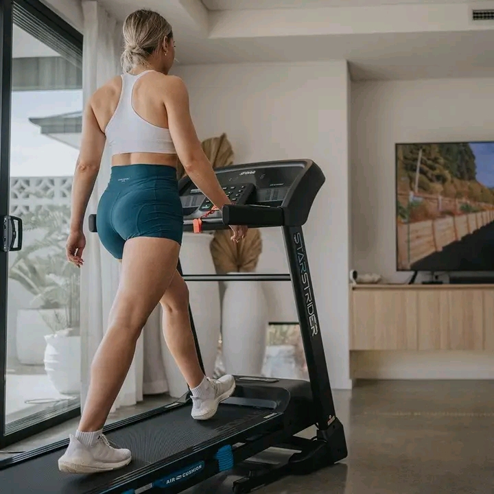

Are you suffering from obesity? Would you like to find a way to lower it if not get rid of your abdominal fats? In this article, you are going to learn some ways to lose your weight through treadmill which is among the best ways of losing weight.
Treadmill exercise is the one which provide best cardiovascular exercise and which can enhance the heart health. It has ability to maintain constant heart rates through the process of exercise. It is mostly beneficial to those with high cholesterol issues.
In this exercise, one will alternate between high intensity intervals and some rest intervals. This both forces you to exert high energy amount hence burning calories faster and as the body recovers from burst high intensity of exercise, it metabolizes the fat for energy. This is a common exercise and is usually done by many people.
This is mostly recommended for beginners who are not able to do incline walks. The role of this exercise is to ensure that the heart rate remains at the fat burning zone for most of the time you are working out hence reap full benefits. Here the effort need to be moderate with heart hitting at its maximum.
This treadmill work out is short and extremely effective in burning of fat. One requires to start on a flat incline and increase it after every one minute while attempting to maintain the pace. Upon reaching the maximum incline, decrease it slowly maintaining your pace until it returns to be flat.
This varies the movement patterns with the aim of targeting other muscle groups and improve balance. One need to choose a comfortable pace and jog for some minutes and then lower the speed to where they can side shuffle. Side shuffle for some time on both sides. The speed should vary depending on the fitness of the person, size and the purpose of the exercise.
The aim of this work out is to slowly increase the speed. During the exercise one is encouraged to breathe in through the nose and out through the mouth. One can also carry dumbbells during the exercise to do overhead shoulder press while walking.
In this exercise one is required to run for five kilometers at their own pace without stopping .It is probably the best among the treadmill weight loss tips. The treadmill is set at flat incline and one starts by walking as warm up. The speed is then increased slowly to a certain level where one is to maintain the pace and it is eventually reduced.
This is to be done especially by those who walk and have interest in burning calorie and butt-building work out. The process of getting heart rate up not only help burn up extra fat but also gets the glutes shaped. Arms are to be in use by helping keep abs tight as the hill increases. There is also possibility to engage glutes to boost toning effects of the work out.
Maintaining exercise is very essential for the proper functioning of the body. People need to engage themselves in various exercises to ensure that they don’t acquire various diseases. Furthermore, it maintains the good shape of the body.